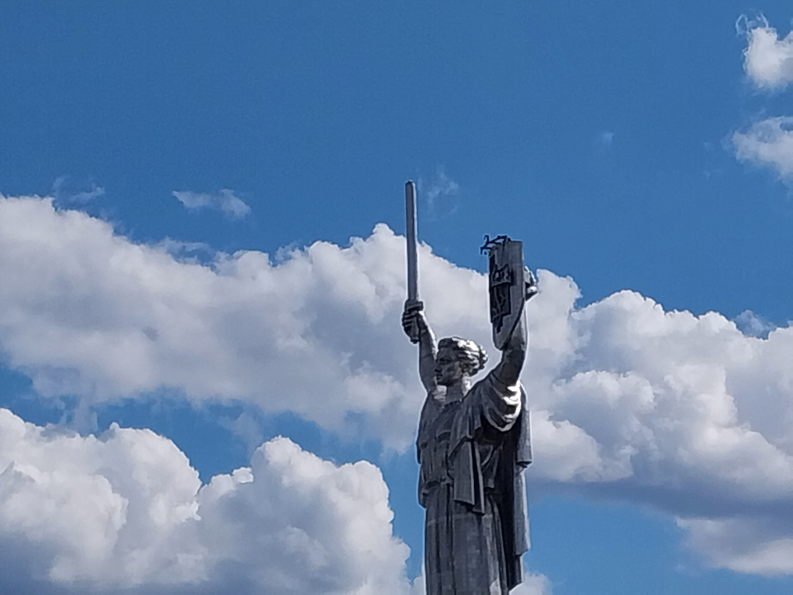
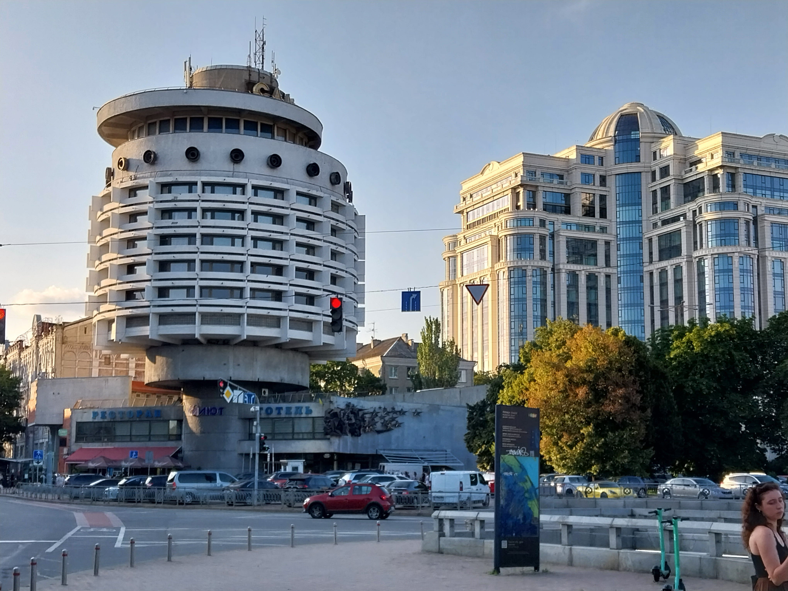
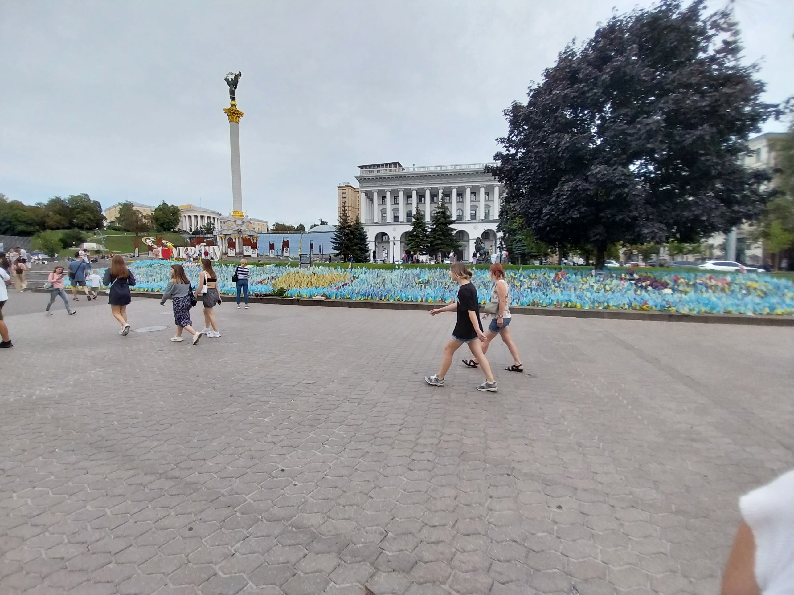

Kyiv
Le train couchette
Après quelque jours à Lviv, nous prenons le train de nuit pour Kyiv. C'est quelque chose que l'on avait déjà fait en 2021, et c'est une expérience très réconfortante.
Notre train part à 23h. Le quai n'est pas surélévé, il faut donc grimper trois marches étroites, et y hisser les valises. On est alors acceuilli par un interieur fraichement peint en beige. On accede aux cabines par un couloir étroit qui longe le coté gauche du train. Comme on est en seconde classe, il y quatres lits par cabine, superposés par deux de chaque coté de la fenetre. Il est flambant neuf et il y a même des petits voyants lumineux pour indiquer si les toilettes sont libres.


On fait les lits puis on se couche l'un au dessus de l'autre. Le bruit et le roulis du train nous berce doucement, et chaque kachlong est un rail en moins qui nous sépare de Kyiv. Nous somme reveillé à 5h30 par l'hote de la rame qui ammene du thé à ceux qui en ont commandé. On regarde l'Ukraine défiler pendant une demi-heure avant de descendre du train, à Kyiv.
La ville

On retrouve la meme ville qu'en 2021, mais beaucoup de choses ont changées. L'immense statue de la mère patrie, installé sur une coline surplombant la ville et le fleuve, est en train de se faire retirer le marteau et la faucille qui ornait son bouclier. Le symbole sera remplacé par le trident national quelque jours plus tard. On ne peut plus visiter le musée à son pied, ce qui est vraiment dommage car il contenait en 2021 deux exposition : une sur la guerre dans le Donbass depuis 2014, plutot moderne, et une soviétique et tres propagandesque sur la Seconde Guerre Mondiale.

Il a toutefois un plus petit musée, avec une exposition sur l'invasion de 2022. Un certains nombres d'objets récupérés sur des soldats russes morts sont présentés. Le passeport d'un tres jeune citoyen de la sois-disante "République Populaire de Louhansk" m'a particulièrement marqué. Cet état-poupée séparatiste installé par la Russie est connu pour sa mobilisation particulièrement agressive. Leur troupes sont connues pour être très mals équipées et entrainée, et utilisées comme chair à canon moins couteuse politiquement que des citoyens russes.
Sur la même colline, il y a la Laure des Grottes, un grand monastère ou sont enterrés dans des tunnels des corps de saints de l'églises orthodoxe. Les corps sont conservés par les mineraux présents naturellement dans les tunnels, et on peut même les visiter, ce qu'on avait fait en 2021. Cette fois-ci, nous n'irons pas, car la Laure est encore controlée par le patriarcat de Moscou. Nous ne sommes pas les seuls de cet avis : lorsque l'on passe devant il y a une petite manifestation. Des affiches sont sur le grillage extérieur, et un type interpelle les prètres à l'aide d'un haut-parleur.

Pas très loin d'ici, on prend un café dans un hotel celebre pour son architecture. La photo que j'ai prise montre en arriere un complexe résidentiel monstrueux, une sorte de McBuilding typique du developpement urbain sauvage qui a lieu en Ukraine.

Sur la place de l'indépendance, dites "Maïdan", lieu de la révolution de la dignité de 2014, il y a avait beaucoup d'installation liées a la guerre. Il y avait un parterre de petit drapeau, chaque drapeau commemorant un soldat tombé. Des hérissons anti-char avaient été peints. Le musée de la méduse et le centre commercial sous-terrain Globousse étaient encore présents.


Les alertes
À Kyiv, on dors chez l'oncle d'Antonina, Serge. Son appartement est dans une khruvtchevka, un immeuble de l'époque de Khroutchev. Ce sont des immeubles d'une dizaine d'étage, ce qui est peu à Kyiv, mais assez longs. Ils sont souvent dans un état plutot mauvais. Chaque appartement dispose d'un voir deux balcons, construits ouverts, mais tous munis de fenetres rajoutées par les résidents, avec du bois. Ces immeubles ont un ascenceur étroit, qui montre son age par toute sortes de bruits menacants. Il y a souvent un jardin à leur pied, muni d'une aire de jeux pour enfant. À l'exterieur, des escaliers recouvert d'un toit en tole menent à un sous-sol peu engageant, dont le sol est en terre battue.

Lorsqu'il y a une alerte aérienne, on entend en premier la sonnerie de l'application prévue à cet effet, puis des sirènes, les mêmes que les premiers mercredis du mois en France. Lors de notre première nuit à Kyiv, Serge nous indique qu'il les ignore. On marche quand même cinq minute pour se réfugier dans le métro, mais les allées et venues nous donnent l'impression que l'attitude de Serge est largement partagée. Il y aura une deuxième alerte dans la même journée, que l'on ignorera. Le début d'une sirène ressemble beaucoup au bruit d'une voiture qui accelère au loin, et on y devient rapidement sensible.
Antonina est abonnée à un canal télégram qui donne des informations plus précises sur les alertes. La pluspart du temps il s'agit d'un bombardier russe capable de lancer des missiles qui à decollé. Il ne lance pas de missile à chaque fois, et ces missiles ayant une très grande portée, cela déclenche une alerte dans toute l'Ukraine.
Lors de notre deuxième nuit, on est reveillés à 1h30 par une alerte. Telegram indique qu'il s'agit de Shaheds, des drones iraniens, lents et petit, mais ayant une grande portée et un cout très faible. On hésite un peu avant de se recoucher. Quinze minutes plus tard, on est de nouveau réveillés, cette fois par des explosions. Serge ne sort pas de sa chambre, et on convient avec Timothé, son fils de 10 ans, de descendre se cacher. On juge le sous-sol trop inconfortable et on prend la direction du métro, ce qui était une franchement mauvaise idée puisque les explosions continuent pendant notre trajet et qu'on apercoit même une sorte de boule de feu traverser l'horizon. On arrive au métro ou il y a cette fois beaucoup de monde. Les plus habitués ont des matelas et des chaises de camping. On attend une heure et demi la fin de l'alerte sur le quai.

On apprendra par la suite que tous les Shaheds ont été abattus, et que les débris n'ont touchés personne. C'était la pire nuit à Kyiv depuis deux mois, mais ce n'étais rien par rapport au quotidien pendant l'hiver. On nous diras aussi que Kyiv est désormais protégées contre les missiles, grace aux defense anti-aériennes fournies par l'occident, mais que c'est la seule ville d'Ukraine dans ce cas. On prendra aussi l'habitude de descendre au métro lors des alertes de Shahed, sans attendre qu'ils soient la.